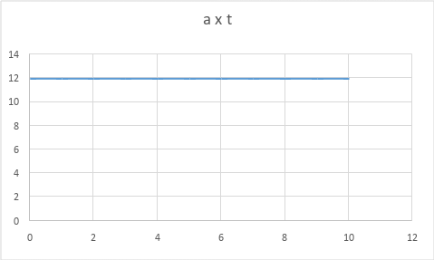

🎯 Por que estudar MRUV?
O Movimento Retilíneo Uniformemente Variado (MRUV) ocorre quando um objeto se move em linha reta e sua velocidade muda de forma constante — ou seja, tem uma aceleração constante.
É o tipo de movimento que acontece quando um carro acelera saindo do repouso, freia bruscamente ou quando um objeto cai em queda livre.
Entender o MRUV é essencial para prever distâncias de frenagem, analisar colisões e compreender fenômenos naturais como a gravidade.
(Substitua as imagens pelos slides com as fórmulas quando estiverem prontos.)
⚡ O que é Aceleração?
A aceleração mede o quanto a velocidade de um objeto muda a cada segundo. Não é só "acelerar" com o pé no acelerador — frear ou mudar de direção também conta como aceleração.
Aceleração Média = Variação da Velocidade ÷ Tempo
O que cada parte significa:
Aceleração média: o quanto a velocidade aumentou ou diminuiu a cada segundo (medida em metros por segundo ao quadrado).
Variação da velocidade: é a diferença entre a velocidade final e a inicial.
Tempo: quanto tempo durou essa mudança.
Exemplo: Um carro estava andando a 20 metros por segundo e, depois de 5 segundos, passou a andar a 35 metros por segundo.
→ Ele aumentou sua velocidade em 15 m/s (35 – 20).
→ Esse aumento aconteceu ao longo de 5 segundos.
→ Então, a cada segundo, ele ganhou 3 m/s.
Portanto, sua aceleração média foi de 3 m/s².
👉 Quando a aceleração é negativa, chamamos de desaceleração — é o que acontece ao frear.
Mesmo andando na mesma velocidade, virar numa curva já é uma forma de aceleração, porque a direção do movimento mudou.
Aplicação prática: Dirigir com acelerações suaves (sem trancos) reduz o risco de derrapagens e colisões traseiras, especialmente em pistas molhadas.
📏 Equações do MRUV
No MRUV, a aceleração é constante. Podemos usar três equações principais para prever o movimento:
1. Função Horária da Velocidade: v = v₀ + a·t
Mostra como a velocidade muda com o tempo.
Exemplo: Um carro parte com velocidade inicial de 10 m/s e acelera a 2 m/s². Qual será sua velocidade após 6 segundos?
→ Aumento de velocidade: 2 m/s a cada segundo × 6 segundos = 12 m/s
→ Velocidade final: 10 + 12 = 22 m/s
2. Função Horária da Posição: s = s₀ + v₀·t + ½·a·t²
Permite calcular onde o objeto estará em um dado instante.
Exemplo: Um trem começa na posição 10.000 metros (10 km), com velocidade de 20 m/s e aceleração de 1 m/s². Onde ele estará após 10 segundos?
→ Distância por velocidade inicial: 20 m/s × 10 s = 200 m
→ Distância por aceleração: metade de 1 m/s² × (10 s)² = 0,5 × 100 = 50 m
→ Posição final: 10.000 + 200 + 50 = 10.250 metros
3. Equação de Torricelli: v² = v₀² + 2·a·Δs
Útil quando não sabemos o tempo, mas conhecemos a distância percorrida.
Exemplo: Um carro viaja a 20 m/s e freia com desaceleração de 4 m/s² até parar. Qual a distância necessária para frear completamente?
→ Velocidade final ao quadrado: 0² = 0
→ Velocidade inicial ao quadrado: 20² = 400
→ Parte da aceleração: 2 × (–4) = –8
→ Ficamos com: 0 = 400 – 8 × Δs
→ Então: 8 × Δs = 400
→ Δs = 400 ÷ 8 = 50 metros
👉 Ou seja, ele precisa de 50 metros para parar.
📊 Gráficos do MRUV
Os gráficos ajudam a visualizar como posição, velocidade e aceleração mudam ao longo do tempo.
1. Gráfico de Velocidade × Tempo (v × t)
Mostra como a velocidade varia com o tempo.
- Eixo x: tempo
- Eixo y: velocidade
No MRUV, esse gráfico é uma reta inclinada. A inclinação representa a aceleração.
Dica: A área sob o gráfico dá o deslocamento!

Interpretação: Reta crescente → aceleração positiva. Reta decrescente → aceleração negativa.
2. Gráfico de Posição × Tempo (s × t)
Mostra como a posição muda com o tempo.
- Eixo x: tempo
- Eixo y: posição
No MRUV, esse gráfico é uma parábola.
- Concavidade para cima → aceleração positiva (a > 0)
- Concavidade para baixo → aceleração negativa (a < 0)
Interpretação: Curva subindo mais rápido → objeto acelerando.
3. Gráfico de Aceleração × Tempo (a × t)
No MRUV, a aceleração é constante — então o gráfico é uma reta horizontal.
Interpretação: Acima do eixo → a > 0. Abaixo → a < 0.
🌍 Casos Particulares
Dois exemplos importantes de MRUV envolvendo a gravidade:
1. Queda Livre
Quando um objeto cai sem resistência do ar, ele sofre uma aceleração constante: a gravidade (~9,8 m/s²).
Parte do repouso (v₀ = 0) e acelera para baixo.
Aplicação: Calcular altura de um prédio soltando um objeto e cronometrando a queda.
2. Lançamento Vertical para Cima
Um objeto é jogado para cima com velocidade inicial. Ele desacelera até parar no ponto mais alto, depois volta em queda livre.
No ponto mais alto: v = 0, mas a ≠ 0 (continua sofrendo gravidade).
Aplicação: Estimar a altura máxima de um foguete caseiro.
🚦 Situações Práticas e Interpretação
Entender os sinais de velocidade, aceleração e deslocamento ajuda a interpretar movimentos reais.
Movimento Progressivo vs. Retrógrado
- Progressivo: velocidade positiva (v > 0) → objeto se afasta da origem.
- Retrógrado: velocidade negativa (v < 0) → objeto volta.
Movimento Acelerado vs. Retardado
- Acelerado: velocidade e aceleração têm o mesmo sinal (ambas + ou ambas –).
- Retardado: sinais opostos (ex: v > 0 e a < 0 → freando).
Exemplo: Um carro anda para frente (v > 0) e pisa no freio (a < 0). É um movimento retardado.
⚠️ Como isso evita acidentes no trânsito?
1. Distância de Frenagem
Ao frear, o carro executa um MRUV com aceleração negativa. A distância para parar depende do quadrado da velocidade inicial.
👉 Dobrar a velocidade exige quatro vezes mais distância para parar!
2. Tempo de Reação + Frenagem
Em 1 segundo a 108 km/h (30 m/s), o carro percorre 30 metros antes de começar a frear. Depois, ainda precisa de cerca de 45 m para parar (com a ≈ –6 m/s²).
Total: 75 m. Dirigir devagar reduz drasticamente esse risco.
3. Ultrassonografia do Trânsito
Radares não medem só velocidade instantânea. Alguns calculam a velocidade média entre dois pontos, detectando quem ultrapassa o limite mesmo em trechos curtos.
💡 Dica Final: Use a Física a Seu Favor
- Use a equação de Torricelli para calcular frenagem sem precisar do tempo.
- Lembre-se: em lançamentos verticais, a velocidade é zero no topo, mas a aceleração não.
- Em gráficos, a área sempre tem significado físico: no v×t, é o deslocamento.
- Dirija com suavidade: acelerações bruscas consomem mais combustível e aumentam o risco.
🧠 Conclusão
O MRUV é muito mais que fórmulas — é a chave para entender mudanças no movimento. Dominar essas ideias permite prever o futuro de um carro em frenagem, um objeto em queda ou um projétil no ar.
Além de ser fundamental na física, esse conhecimento salva vidas todos os dias nas estradas.